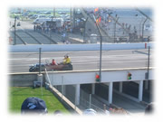
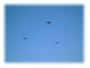
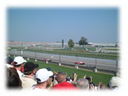

| ..*..*.. 2002年10月11日(金) 晴れ ..*..*.. 今日は9月29日のインディアナポリスでのアメリカグランプリの最終日について書こうと思っているのですが、もう、鈴鹿グランプリが始まってしまっていますね。心はそっちにいっていますo(^-^)o。でも書きます。 ２日続けて朝７時に集合でした。ホテルからバスを使って入場したのですが、途中、キャンピングカーの中で夜を過ごした人をたくさん見かけました。ホテルはなかなかとれない上、通常の3倍の値段になるので、サーキット近くの駐車場で一夜を明かすというのはいいアイディアですよね。車の中で寝れば安上がりだし、ギリギリまで眠れるし、周りにそういう車がたくさんいれば、治安もそんなに心配しなくていいので。体力のあるアメリカ人だからできるのかもしれませんが。 この日は指定席での観戦なので、入場も厳しく、入るたびにチケットの提示を求められました。トイレに行くときも、食べ物をを買いに行くだけでもゲートを出るためチケットを見せなくちゃならなくて、昨日の予選の日とは大違いでした。  まず、F1のフリー走行があり、カート（ポルシェ／ミシュラン）のレースがあり、その後、選手たちがオールドカーに乗って、サーキットを一周しました。各チーム2人のドライバーが1台の車に乗って、手を振りながら次々と来ました。写真は、ジョーダンの佐藤琢磨とフィジケラ。ちゃんとこっちにも手を振ってくれました(^^) ミハエル・シューマッハは、デジカメを持っていて、観衆を車の中から写していました。 私たちの席は、スタートの最初のコーナーです。その後、インフィールドの中もかなり見ることができますが、全体の半分も見えません。でも、22台の車にはいろいろなこと起こるので、待つことなく、次々と車が現れます。  午後１時。いよいよグランプリの始まりです。はじまりの歌が流れたあと、こんな風に飛行機が3機、上空をきれいに並んで回りました。 レースは秒単位で争いますが、故障で周回遅れの車が出たり、ピットインをしていないため見かけ上で上位にいたりということがあるので、実際の順位をきちんと把握するにはかなり神経を集中しなくてはなりません。それがまた楽しいのですが。 最初からフェラーリの２台は独走で予想どおりという感じでした。ウィリアムズのラルフとモントーヤは犬猿の仲と言われていますが、今回もやってくれました。なんと、チームメート同士で接触してしまったのです。結局、ラルフはピットに戻って車を直さなくてはならずその後ずっとビリを走ることになり、モントーヤも今回優勝すれば今期2位のチャンスが残っていたのに、挽回することができず(それでも4位だったからすごい！)、みすみす2位の座をバリチェロに渡すことになってしまいました。 注目の佐藤琢磨はすごくいい走りでした。15番目からのスタートだったのに、バニスとアーバインを抜いてすぐに12位。その後も前2台にぴったりついて、何度も抜かしそうになりました。 佐藤琢磨がギリギリにせまっていながら抜かせなかったのは、おそらく、チームメートのフィジケラが前の2台の中の1台だったからだと思います。以前のグランプリで、フィジケラを抜こうとして失敗して2台ともピットに戻るはめになってしまったことがあります。そのときは、新人ということで許してもらったそうですが、今度同じことが起こしたらジョーダンにとっても大きな損失になってしまいます。 ちなみに琢磨は2ストップ、フィジケラは1ストップなので、マシンの軽い琢磨の方が早いはずなんです。もし予選で、フィジケラの前に入っていれば、前を気にすることなくどんどん抜かせたと思うので、返すがえず、予選で振るわなかったのは残念です。  フェラーリは2台とも２ストップでした。２ストップは、車が軽いというメリットはあるのですが、ビットで何が起こるのかわからないので、ひとつのカケだと私は思うんです。タイヤ交換やガソリンの給油で失敗したりするとすぐに時間の損失につながります。だからいつも、チームのうちひとりが1ストップ、もうひとりが2ストップ作戦をとるんだと思うのですが（違うかも(^^;）、フェラーリは2台とも2ストップでした。ピットクルーも相当自信があるのかもしれません。 全体的にリタイアの少ないレースでした。琢磨は、確か９戦連続で完走してるんだけど、琢磨の調子がいいときは他の車も完走率が高くて、どうも上位にいかないのが残念です。 私が琢磨を好きなのは、予選で順位を下げていても、前回で事故にあっていても、いつも全力投球な感じがするとこ。あの優しい笑顔からは想像もできないほど、積極的な走りをするんですよね。今年の最初の頃は完走というより、早く走ろうという部分が全面に出ていて、リタイアもよくしましたが好感がもてました。後半は完走していますが、それでも随所に積極性が見られて好きです。 最後の最後で、ミハエルがバリチェロと同時にゴールしようとしてスピードを落とし、僅差でバリチェロが前に出てしまったので、１位はバリチェロ、2位はミハエルとなりました。私はゴールは見えない位置だったので、このことはすぐには気が付きませんでした。電光掲示板にバリチェロが１位と出たので「変だな」と思ったくらいでした。 ミハエルがバリチェロに優勝を譲った形になってしまったことに文句は出ているということは、あとになって知りました。今年のオーストリア戦のとき、バリチェロがずっと１位を走っていたのに、最後の最後で、フェラーリからのチームオーダーが出てバリチェロがミハエルを勝たせたときにはものすごいブーイングがありました。私もこのときはすごく怒りました。でも、チームオーダーに対して正式なおとがめはありませんでした。チームオーダーはF1の歴史だそうです。それを聞いてから、私自身は、ゴール前で誰が誰に譲ろうが、チームオーダーが出ようが気にならなくなりました。そういうのがあっても、F1の面白さって、もっと別のところにあるような気がします。 試合が終わってまだ少し時間があったので、インフィールドの方へ歩いてみました。人が集まっているのでなにかと思って一緒になって待っていると、1位から3位のインタビューを受けた3人が出てきました。 左がフェラーリのミハエルとバリチェロ、右が3位のマクラーレンのクルサードです。ほんものをこんな間近で見ることができて心がうち震えました。すごい人だかりで、立っている人の足の隙間から見たのですが(^^; あとはバスに乗って空港へ行き、帰るだけ。。。のはずが、インディアナポリスからシカゴへ行くはずの飛行機が1時間以上遅れ、私たちがシカゴに付いたときには、シカゴからサンノゼに帰る飛行機が出てしまったあとでした。なんと、シカゴに一泊するはめになってしまいました。こんな風に乗り継ぎがうまく行かない時には、飛行機会社が費用を負担してシカゴのホテルに泊まれます。ものすごく疲れたのに、バス停まで歩いたり、バスでホテルまで行かされたりと、疲れました。でも、こういう体験ができてよかったと思わなくちゃね。 今回は、私の意見や見方をつらつらと書いてしまいました。明日の鈴鹿の決勝も楽しみですo(^-^)o |